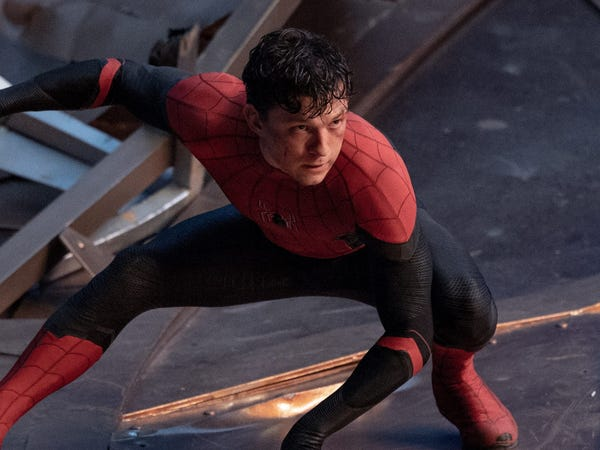
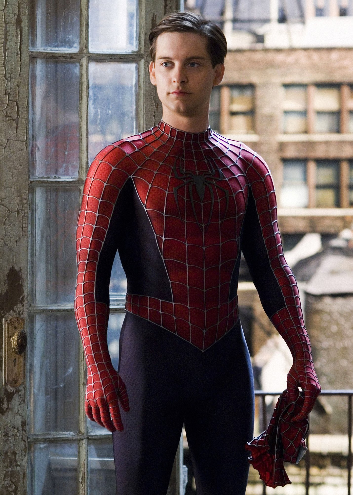
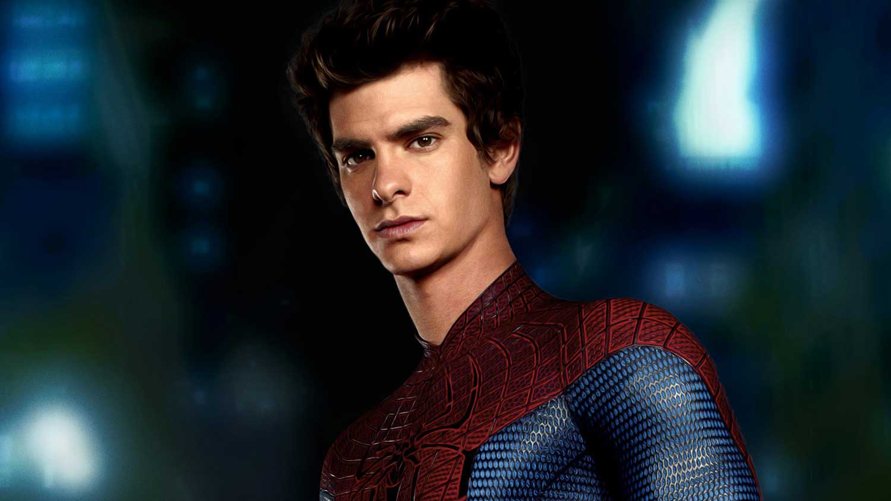

Tom Holland
Tom holland is the latest spiderman in the business, having completed 3 movies he is set to be in 3 more siderman movies for the next few years. Living in Kingston he is the only British spiderman to date.
Tobey macguire
Tobey is the first spiderman to be shown on the big screen, he was featured in 3 spiderman films and is to date the highest paid spiderman. Tobey brought the nerdy teen turned super-hero to life and set the tone for all the following spiderman characters.
Andrew Garfield
Andrew garfield was the middle child of the spiderman family, becoming the second spiderman to be on the big screen. He took a more cool approach to the character peter parker and only featured in two films.